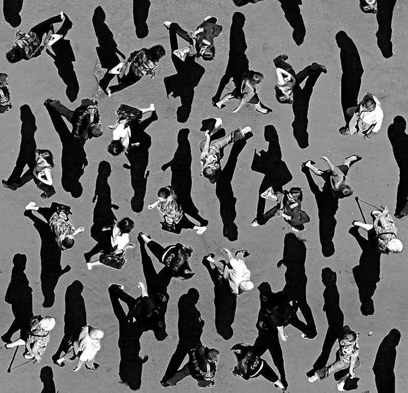
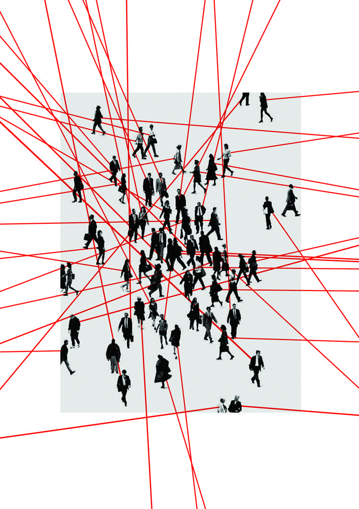
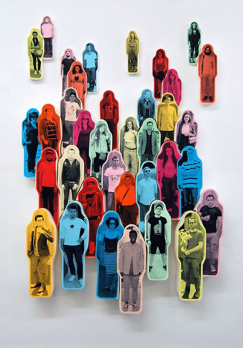
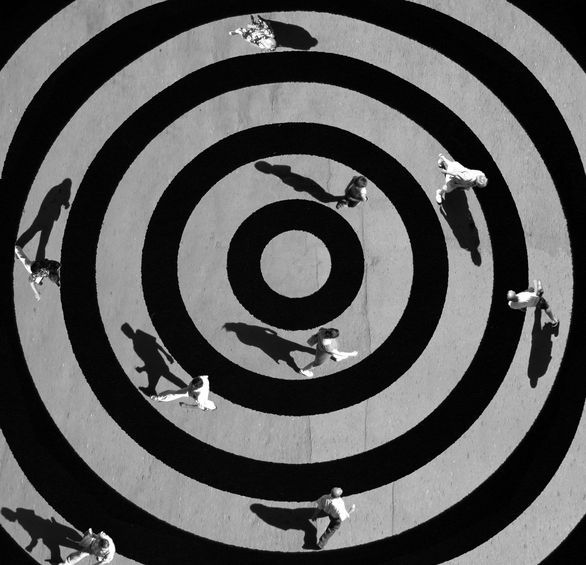
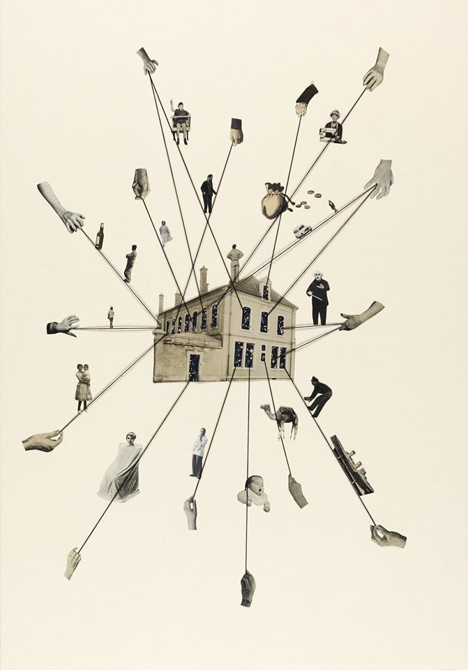

Natalia Lira Salcido
Atelier
Proyectos
e11 - chaosmos, 2020
p11 - maniera paolo, 2020
n16 - yangshuo pavilion, 2019
r18 - bishan dance school, 2019
p11 - maniera larga, 2020
c16 - CST, tenero, switzerland, 2017
p11 - maniera kimono, 2020
n09 - z33, hasselt, belgium, 2011-2019
p11 - maniera drago, 2020
n02 - casa due, sorano, italy, 2007-2010
p10 - maniera cavalluccio, 2018
e10 - labyrinth, 2007
n11 - house in luque, cordoba, 2012
Contacto
    